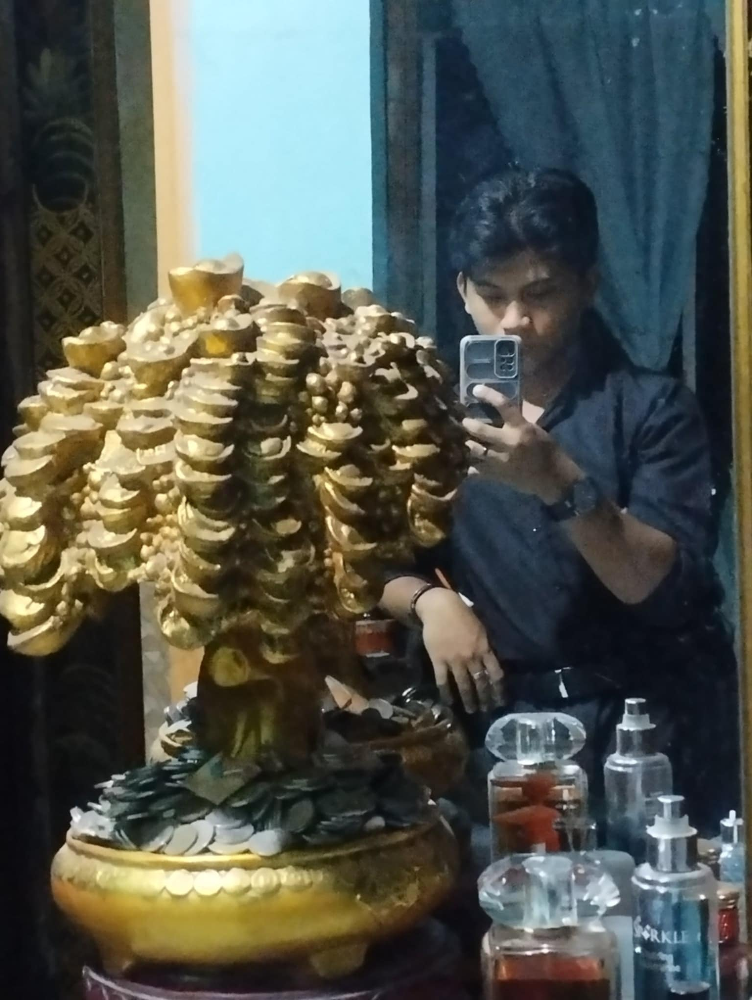

About ISAT-U Forum
Welcome to the ISAT-U Forum, a platform designed to connect students, faculty, and staff of the Iloilo Science and Technology University (ISAT-U). This forum functions much like popular online communities, enabling users to share ideas, discuss topics, post questions, and vote on submissions made by others. Whether you're sharing a project idea, discussing academic topics, or engaging in casual conversation, this space is built for collaboration and community-building. Join the conversation and become a part of the ISAT-U online community!
Meet the Team

Project Manager / Lead Developer
Janzen Loza
Front-End Developer / UI/UX Designer
Kyle Johnsen Anastacio
Back-End Developer / Content Manager
Mathew Sarmiento